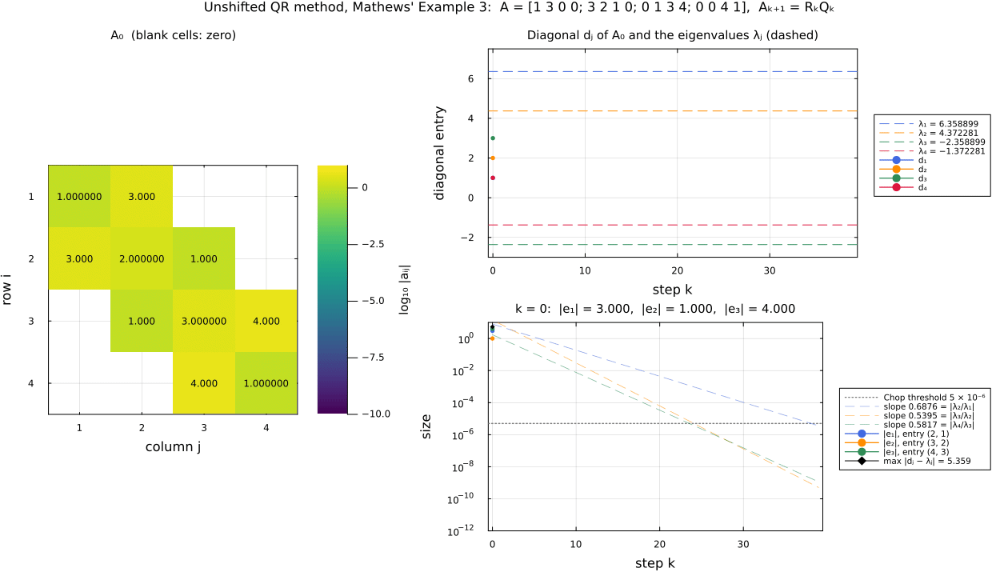
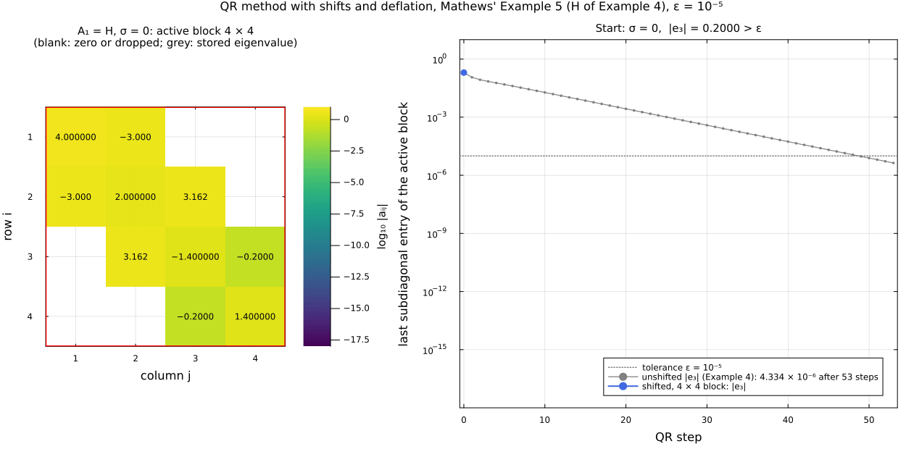

QR method
Source inspiration: (Mathew 2000-2019).
Description
The QR method finds all the eigenvalues of a square matrix at once. Factor the matrix as \(\mathbf{A} = \mathbf{Q}\mathbf{R}\), with \(\mathbf{Q}\) orthogonal and \(\mathbf{R}\) upper triangular, and multiply the factors back together in the reverse order. Starting from \(\mathbf{A}_0 = \mathbf{A}\), each step is
\[ \mathbf{A}_k = \mathbf{Q}_k \mathbf{R}_k, \qquad \mathbf{A}_{k+1} = \mathbf{R}_k \mathbf{Q}_k = \mathbf{Q}_k^{T} \mathbf{A}_k \mathbf{Q}_k . \]
Every \(\mathbf{A}_k\) is similar to \(\mathbf{A}\) and has the same eigenvalues. When the eigenvalues have distinct absolute values, the entries below the diagonal die out and the diagonal entries converge to the eigenvalues, ordered by decreasing absolute value; for a symmetric matrix the limit is diagonal. In the long run the entry in position \((j+1, j)\) shrinks by about the factor \(|\lambda_{j+1}/\lambda_j|\) at each step, so two eigenvalues close in size make the method slow. Mathews applies it to real symmetric matrices: Householder’s method first reduces the matrix to a similar tridiagonal one, which makes every QR step cheap, and shifts, which factor \(\mathbf{A}_k - s_k\mathbf{I}\) instead of \(\mathbf{A}_k\), turn the slow linear convergence into a handful of steps. All the iterations below were recomputed in 50-digit arithmetic.
Animations
Each animation below follows one of Mathews’ worked examples, one QR step per frame. The left panel is the current matrix drawn as a heat map: each cell is coloured by \(\log_{10}|a_{ij}|\) and prints the entry, diagonal entries to six decimals and the others to four significant figures, and a blank cell is zero. The cells beside the diagonal darken as their entries shrink. In Cases 1 and 2 the right-hand panels follow the diagonal entries \(d_j\) toward the eigenvalues \(\lambda_j\) (dashed lines), and, on a logarithmic axis, the sizes \(|e_j|\) of the subdiagonal entries and the largest diagonal error \(\max_j |d_j - \lambda_j|\). A quantity that is multiplied by a fixed ratio \(r\) at every step falls on a straight line there; the dashed lines have the slopes \(|\lambda_{j+1}/\lambda_j|\) that the convergence theorem predicts and are drawn through the last computed value. The iterations run in 256-bit floating-point arithmetic (about 77 significant digits), with positive diagonal entries in every \(\mathbf{R}\) as in the tables below, so the signs of the off-diagonal entries can differ from Mathews’ printouts. The entries outside the tridiagonal band, which are zero in exact arithmetic, stay below \(10^{-60}\) in this computation and are drawn blank.
All three animations are new: Mathews’ QR Method module has no animation, and the archive of his animations has none for eigenvalue methods. The single QR factorizations of Examples 1 and 2, the least-squares parabola of Examples 6 and 7, and the eigenvectors accumulated in \(\mathbf{V}_k\) are not animated.
Julia source scripts that generated these animations are linked under each case.
Case 1 — The unshifted QR method on the tridiagonal matrix of Example 3, \(39\) steps
Behavior: Every iterate stays symmetric and tridiagonal. The diagonal entries do not settle in place at once: \(d_2\) drops to \(-0.310169\) at step \(1\) and climbs past \(\lambda_2 \approx 4.372281\) to \(4.904309\) at step \(4\) before coming back, while \(d_3\) jumps from \(3\) to \(4.996724\) at step \(1\) and then falls to \(\lambda_3 \approx -2.358899\), and \(d_4\) passes \(\lambda_4 \approx -1.372281\) at step \(1\), falls to \(-1.581690\) at step \(2\) and then rises back. \(|e_2|\) grows from \(1\) to \(3.834\) at step \(2\) before it shrinks; \(|e_1|\) and \(|e_3|\) shrink at every step. From step \(10\) on, each \(|e_j|\) is multiplied at every step by a ratio within \(1\%\) of its predicted value \(|\lambda_{j+1}/\lambda_j|\) (\(0.6876\), \(0.5395\) and \(0.5817\)), so the three lines run parallel to their dashed slopes. \(e_1\) has the largest ratio and is the last entry to fall below Mathews’ Chop threshold \(5 \times 10^{-6}\), at step \(39\) (\(|e_1| = 3.568 \times 10^{-6}\)). The largest diagonal error falls faster, by a ratio that approaches \(0.6876^2 \approx 0.4728\), to \(6.410 \times 10^{-12}\) at step \(39\).

Case 2 — Householder reduction of Example 4, then \(53\) unshifted QR steps
Behavior: The animation opens with the dense matrix \(\mathbf{A}\) and the two Householder steps: \(\mathbf{P}_1\mathbf{A}\mathbf{P}_1\) has zeros in positions \((3, 1)\), \((4, 1)\), \((1, 3)\) and \((1, 4)\), and \(\mathbf{H} = \mathbf{P}_2(\mathbf{P}_1\mathbf{A}\mathbf{P}_1)\mathbf{P}_2\) is tridiagonal. The QR steps start from \(\mathbf{A}_0 = \mathbf{H}\). Here every diagonal entry moves monotonically to its eigenvalue and every \(|e_j|\) decreases at every step; from step \(6\) on, each ratio is within \(1\%\) of its predicted value. \(|e_1|\) and \(|e_2|\) fall fast, by \(0.5486\) and \(0.4514\) per step, to \(4.740 \times 10^{-14}\) and \(3.397 \times 10^{-18}\) at step \(53\). \(|e_3|\) falls only by \(0.8229\) per step, because \(\lambda_3 \approx 1.645751\) and \(\lambda_4 \approx 1.354249\) are close, and reaches \(4.334 \times 10^{-6}\) at step \(53\), the first step at which all three entries are below \(5 \times 10^{-6}\). From step \(4\) on the largest diagonal error is that of \(d_3\); it falls by a ratio that approaches \(0.8229^2 \approx 0.6771\), to \(6.444 \times 10^{-11}\) at step \(53\).

Case 3 — Shifts and deflation on Example 5 (the \(\mathbf{H}\) of Example 4), \(\varepsilon = 10^{-5}\), five shifted steps
Behavior: After an opening frame showing \(\mathbf{H}\), each frame is one shifted step or one deflation; the last frame shows the four stored eigenvalues. The heat map shows the active block of \(\mathbf{A}_{i+1} + \sigma\mathbf{I}\), where \(\sigma\) is the running sum of the shifts; adding \(\sigma\) back undoes the shifts, so its diagonal entries approach eigenvalues of \(\mathbf{H}\). A red frame outlines the active block, and grey cells hold the eigenvalues stored on deflation. The right panel follows the last subdiagonal entry of the active block. With the shifts \(s_1 = \sqrt2 \approx 1.414214\), \(s_2 \approx -0.06023531\) and \(s_3 \approx 0.0002704376\), \(|e_3|\) goes \(0.2 \to 0.03406 \to 3.195 \times 10^{-5} \to 8.279 \times 10^{-17}\), gaining more digits at each step than at the one before. After step \(3\), \(\lambda_4 = \sigma \approx 1.354249\) is stored and the block shrinks to \(3 \times 3\). One shift, \(s_4 \approx 0.2915027\), takes \(|e_2|\) from \(0.001110\) to \(1.357 \times 10^{-11}\) and gives \(\lambda_3 = \sigma \approx 1.645751\). On the last \(2 \times 2\) block the shift \(s_5 \approx -5.291503\) is an exact eigenvalue of the block, so in exact arithmetic step \(5\) makes \(e_1\) zero; in the 256-bit computation it is below \(10^{-60}\), drawn as a triangle on the bottom edge. Then \(\lambda_2 = \sigma \approx -3.645751\) and \(\lambda_1 \approx 6.645751\). The grey line, for comparison, is \(|e_3|\) in the unshifted run of Case 2, still \(4.334 \times 10^{-6}\) after \(53\) steps.

The QR Decomposition
A nonsingular square matrix \(\mathbf{A}\) has a factorization \(\mathbf{A} = \mathbf{Q}\mathbf{R}\) with \(\mathbf{Q}\) unitary (\(\mathbf{Q}^{*}\mathbf{Q} = \mathbf{I}\), where \(\mathbf{Q}^{*}\) is the conjugate transpose) and \(\mathbf{R}\) upper triangular. If \(\mathbf{A}\) is real, \(\mathbf{Q}\) can be taken orthogonal, \(\mathbf{Q}^{T}\mathbf{Q} = \mathbf{Q}\mathbf{Q}^{T} = \mathbf{I}\), and \(\mathbf{R}\) real.
The factorization is unique once the diagonal entries of \(\mathbf{R}\) are required to be positive; otherwise a column of \(\mathbf{Q}\) and the matching row of \(\mathbf{R}\) can both change sign. Every factorization on this page uses positive diagonal entries in \(\mathbf{R}\). In this form it is the Gram–Schmidt process written as a matrix product: column \(j\) of \(\mathbf{Q}\) is column \(j\) of \(\mathbf{A}\) with its components along the earlier columns of \(\mathbf{Q}\) removed, then normalised, and entry \(r_{ij}\) of \(\mathbf{R}\) records the component \(\mathbf{q}_i \cdot \mathbf{a}_j\) (and \(r_{jj}\) the length that was normalised away).
Mathews uses Mathematica’s built-in QRDecomposition, which returns \(\mathbf{Q}^{T}\) rather than \(\mathbf{Q}\): its first output \(\mathbf{q}\) satisfies \(\mathbf{A} = \mathbf{q}^{T}\mathbf{R}\), so he transposes it before writing \(\mathbf{A} = \mathbf{Q}\mathbf{R}\).
Example 1 — QR decomposition of a \(3 \times 3\) matrix
Find the QR decomposition of
\[ \mathbf{A} = \begin{pmatrix} 2 & 4 & 2 \\ -1 & 0 & -4 \\ 2 & 2 & -1 \end{pmatrix}. \]
Step 1 (first column): \(\lVert \mathbf{a}_1 \rVert = \sqrt{4 + 1 + 4} = 3\), so \(r_{11} = 3\) and \(\mathbf{q}_1 = \tfrac13(2, -1, 2)\).
Step 2 (second column): \(r_{12} = \mathbf{q}_1 \cdot \mathbf{a}_2 = \tfrac13(8 + 0 + 4) = 4\), and
\[ \mathbf{a}_2 - 4\mathbf{q}_1 = \left(\tfrac43, \tfrac43, -\tfrac23\right), \qquad r_{22} = \left\lVert \left(\tfrac43, \tfrac43, -\tfrac23\right) \right\rVert = 2, \qquad \mathbf{q}_2 = \tfrac13(2, 2, -1). \]
Step 3 (third column): \(r_{13} = \mathbf{q}_1 \cdot \mathbf{a}_3 = \tfrac13(4 + 4 - 2) = 2\), \(r_{23} = \mathbf{q}_2 \cdot \mathbf{a}_3 = \tfrac13(4 - 8 + 1) = -1\), and
\[ \mathbf{a}_3 - 2\mathbf{q}_1 + \mathbf{q}_2 = \left(\tfrac43, -\tfrac83, -\tfrac83\right), \qquad r_{33} = 4, \qquad \mathbf{q}_3 = \tfrac13(1, -2, -2). \]
The factorization is exact in rational numbers:
\[ \boxed{\ \mathbf{A} = \underbrace{\begin{pmatrix} \tfrac23 & \tfrac23 & \tfrac13 \\[1mm] -\tfrac13 & \tfrac23 & -\tfrac23 \\[1mm] \tfrac23 & -\tfrac13 & -\tfrac23 \end{pmatrix}}_{\mathbf{Q}} \underbrace{\begin{pmatrix} 3 & 4 & 2 \\ 0 & 2 & -1 \\ 0 & 0 & 4 \end{pmatrix}}_{\mathbf{R}}\ } \]
This agrees with Mathews’ output. Verification: multiplying out gives \(\mathbf{Q}\mathbf{R} = \mathbf{A}\) entry for entry, and \(\mathbf{Q}^{T}\mathbf{Q} = \mathbf{I}\); both products were checked in exact arithmetic.
| Row of \(\mathbf{Q}\mathbf{R}\) | Computation | Row of \(\mathbf{A}\) |
|---|---|---|
| 1 | \(\left(\tfrac23 \cdot 3,\ \tfrac23 \cdot 4 + \tfrac23 \cdot 2,\ \tfrac23 \cdot 2 - \tfrac23 + \tfrac13 \cdot 4\right)\) | \((2, 4, 2)\) \(\checkmark\) |
| 2 | \(\left(-\tfrac13 \cdot 3,\ -\tfrac13 \cdot 4 + \tfrac23 \cdot 2,\ -\tfrac13 \cdot 2 - \tfrac23 - \tfrac23 \cdot 4\right)\) | \((-1, 0, -4)\) \(\checkmark\) |
| 3 | \(\left(\tfrac23 \cdot 3,\ \tfrac23 \cdot 4 - \tfrac13 \cdot 2,\ \tfrac23 \cdot 2 + \tfrac13 - \tfrac23 \cdot 4\right)\) | \((2, 2, -1)\) \(\checkmark\) |
Example 2 — QR decomposition of a \(4 \times 4\) matrix, in decimal and in exact arithmetic
Find the QR decomposition of the symmetric matrix
\[ \mathbf{A} = \begin{pmatrix} 4 & 1 & 3 & -2 \\ 1 & -2 & 4 & 1 \\ 3 & 4 & 1 & 2 \\ -2 & 1 & 2 & 3 \end{pmatrix}. \]
(a) Decimal arithmetic. The same Gram–Schmidt steps as in Example 1, carried out in floating point, give (to six significant figures)
\[ \mathbf{Q} \approx \begin{pmatrix} 0.730297 & -0.144673 & 0.179957 & -0.642924 \\ 0.182574 & -0.578691 & 0.610841 & 0.508582 \\ 0.547723 & 0.675140 & 0.0684345 & 0.489390 \\ -0.365148 & 0.434019 & 0.767987 & -0.297472 \end{pmatrix}, \qquad \mathbf{R} \approx \begin{pmatrix} 5.47723 & 2.19089 & 2.73861 & -1.27802 \\ 0 & 4.14729 & -1.20561 & 2.36299 \\ 0 & 0 & 4.58765 & 2.69176 \\ 0 & 0 & 0 & 1.88079 \end{pmatrix}. \]
(b) Exact arithmetic. The first column has length \(\sqrt{16 + 1 + 9 + 4} = \sqrt{30}\), and the exact factor \(\mathbf{R}\) is
\[ \boxed{\ \mathbf{R} = \begin{pmatrix} \sqrt{30} & \tfrac25\sqrt{30} & \tfrac12\sqrt{30} & -\tfrac{7}{30}\sqrt{30} \\[1mm] 0 & \tfrac15\sqrt{430} & -\tfrac{5}{86}\sqrt{430} & \tfrac{49}{430}\sqrt{430} \\[1mm] 0 & 0 & \tfrac{1}{43}\sqrt{38915} & \tfrac{531}{38915}\sqrt{38915} \\[1mm] 0 & 0 & 0 & \tfrac{98}{2715}\sqrt{2715} \end{pmatrix}\ } \]
with \(38915 = 5 \cdot 43 \cdot 181\) and \(2715 = 3 \cdot 5 \cdot 181\). The columns of \(\mathbf{Q}\) are
\[ \mathbf{q}_1 = \tfrac{\sqrt{30}}{30}(4, 1, 3, -2), \quad \mathbf{q}_2 = \tfrac{\sqrt{430}}{430}(-3, -12, 14, 9), \quad \mathbf{q}_3 = \tfrac{\sqrt{38915}}{77830}(71, 241, 27, 303), \quad \mathbf{q}_4 = \tfrac{\sqrt{2715}}{5430}(-67, 53, 51, -31). \]
Mathews writes the same entries of \(\mathbf{R}\) in unsimplified form, for example \(r_{13} = \sqrt{3/10} + 2\sqrt{6/5}\) and \(r_{23} = -8\sqrt{2/215} - 9/\sqrt{430}\); each of his entries simplifies to the one above. Rounded, the exact \(\mathbf{R}\) is the decimal \(\mathbf{R}\) of part (a). Verification: in exact arithmetic \(\mathbf{Q}\mathbf{R} - \mathbf{A}\) simplifies to the zero matrix and \(\mathbf{Q}^{T}\mathbf{Q}\) to \(\mathbf{I}\); in part (a) both residuals are below \(10^{-49}\) in 50-digit arithmetic.
The QR Method
The QR transformation
From \(\mathbf{A} = \mathbf{Q}\mathbf{R}\) and \(\mathbf{Q}^{T}\mathbf{Q} = \mathbf{I}\) we get \(\mathbf{R} = \mathbf{Q}^{T}\mathbf{A}\), so the reversed product is
\[ \widehat{\mathbf{A}} = \mathbf{R}\mathbf{Q} = \mathbf{Q}^{T}\mathbf{A}\mathbf{Q} = \mathbf{Q}^{-1}\mathbf{A}\mathbf{Q}. \tag{1} \]
\(\widehat{\mathbf{A}}\) is similar to \(\mathbf{A}\), so it has the same eigenvalues, and if \(\mathbf{A}\) is symmetric so is \(\widehat{\mathbf{A}}\), because \((\mathbf{Q}^{T}\mathbf{A}\mathbf{Q})^{T} = \mathbf{Q}^{T}\mathbf{A}^{T}\mathbf{Q}\). The QR method repeats this transformation.
- Set \(i = 0\) and \(\mathbf{A}_0 = \mathbf{A}\).
- Repeat:
- factor \(\mathbf{A}_i = \mathbf{Q}_i \mathbf{R}_i\);
- form \(\mathbf{A}_{i+1} = \mathbf{R}_i \mathbf{Q}_i = \mathbf{Q}_i^{T} \mathbf{A}_i \mathbf{Q}_i\);
- set \(i = i + 1\);
After \(k\) steps \(\mathbf{A}_k = \mathbf{V}_k^{T}\mathbf{A}\mathbf{V}_k\) with \(\mathbf{V}_k = \mathbf{Q}_0\mathbf{Q}_1\cdots\mathbf{Q}_{k-1}\) orthogonal. For a symmetric matrix, as \(\mathbf{A}_k\) approaches a diagonal matrix \(\mathbf{D}\), the columns of \(\mathbf{V}_k\) approach eigenvectors of \(\mathbf{A}\): \(\mathbf{A}\mathbf{V}_k = \mathbf{V}_k\mathbf{A}_k \approx \mathbf{V}_k\mathbf{D}\).
Let the real \(n \times n\) matrix \(\mathbf{A}\) have eigenvalues with distinct absolute values, \(|\lambda_1| > |\lambda_2| > \cdots > |\lambda_n| > 0\), and suppose a nondegeneracy condition on its eigenvectors holds (it holds for almost every matrix; it fails, for example, for a diagonal matrix whose entries are not in order of decreasing absolute value, which the method leaves unchanged). Then the entries of \(\mathbf{A}_k\) below the diagonal tend to \(0\), the entry in position \((j+1, j)\) like \(|\lambda_{j+1}/\lambda_j|^{k}\), and the diagonal entries tend to \(\lambda_1, \lambda_2, \ldots, \lambda_n\) in that order. For a symmetric \(\mathbf{A}\) the limit is the diagonal matrix \(\operatorname{diag}(\lambda_1, \ldots, \lambda_n)\), and the diagonal entries converge at the squared rate, \(|\lambda_{j+1}/\lambda_j|^{2k}\).
The unshifted method cannot separate two eigenvalues of equal absolute value. The symmetric matrix \(\begin{pmatrix} 0 & 1 \\ 1 & 0 \end{pmatrix}\), with eigenvalues \(1\) and \(-1\), factors as \(\mathbf{Q} = \mathbf{A}\), \(\mathbf{R} = \mathbf{I}\), so \(\mathbf{R}\mathbf{Q} = \mathbf{A}\) and every iterate equals the starting matrix. A real matrix with complex eigenvalues behaves the same way: each conjugate pair leaves a \(2 \times 2\) block on the diagonal.
Why tridiagonal and Hessenberg matrices
The method works for any real matrix, but for a full \(n \times n\) matrix every QR factorization costs on the order of \(n^3\) operations and many steps may be needed. It is much cheaper on matrices with special structure, preferably
- symmetric tridiagonal matrices,
- Hessenberg matrices (zero below the first subdiagonal),
- symmetric band matrices.
The QR transformation preserves these structures: if \(\mathbf{A}\) is upper Hessenberg so is \(\mathbf{R}\mathbf{Q}\), and if \(\mathbf{A}\) is also symmetric, \(\mathbf{R}\mathbf{Q}\) is symmetric tridiagonal. As a general count, one QR step then costs on the order of \(n^2\) operations for a Hessenberg matrix and of \(n\) for a symmetric tridiagonal one, since the factorization needs only \(n - 1\) plane rotations, each removing one subdiagonal entry. Mathews’ textbook treatment (the module’s proof page) builds \(\mathbf{Q}_k\) from exactly such rotations, as in Jacobi’s method. The standard practice for a dense symmetric matrix is therefore to reduce it first to a similar tridiagonal matrix by orthogonal transformations, then apply a tridiagonal eigenvalue solver. In LAPACK that solver is the routine DSTEQR, which uses the implicit QL or QR method and can also accumulate the orthogonal transformations to deliver the eigenvectors.
Example 3 — The unshifted QR method on a symmetric tridiagonal matrix
Apply the QR method to the symmetric tridiagonal matrix
\[ \mathbf{A} = \begin{pmatrix} 1 & 3 & 0 & 0 \\ 3 & 2 & 1 & 0 \\ 0 & 1 & 3 & 4 \\ 0 & 0 & 4 & 1 \end{pmatrix} \]
to obtain a diagonal matrix \(\mathbf{D}\) with the same eigenvalues.
Exact eigenvalues. The characteristic polynomial factors as \((\lambda^2 - 4\lambda - 15)(\lambda^2 - 3\lambda - 6)\), so in order of decreasing absolute value
\[ \lambda_1 = 2 + \sqrt{19} \approx 6.358899, \quad \lambda_2 = \tfrac{3 + \sqrt{33}}{2} \approx 4.372281, \quad \lambda_3 = 2 - \sqrt{19} \approx -2.358899, \quad \lambda_4 = \tfrac{3 - \sqrt{33}}{2} \approx -1.372281, \]
and the theorem predicts that the subdiagonal entries \(e_1, e_2, e_3\) shrink per step by the factors
\[ \left|\tfrac{\lambda_2}{\lambda_1}\right| \approx 0.687585, \qquad \left|\tfrac{\lambda_3}{\lambda_2}\right| \approx 0.539512, \qquad \left|\tfrac{\lambda_4}{\lambda_3}\right| \approx 0.581747 . \]
Setup. \(\mathbf{A}_0 = \mathbf{A}\); each step factors \(\mathbf{A}_k = \mathbf{Q}_k\mathbf{R}_k\) (with positive diagonal in \(\mathbf{R}_k\)) and sets \(\mathbf{A}_{k+1} = \mathbf{R}_k\mathbf{Q}_k\); no shift, a fixed number of \(39\) steps. Mathews calls his program with the argument \(40\); it performs \(39\) QR steps and labels the iterates from \(\mathbf{A}_2\) to \(\mathbf{A}_{40}\), so his \(\mathbf{A}_{k+1}\) is the \(\mathbf{A}_k\) of this page.
Step 1. The first factorization gives
\[ \mathbf{A}_1 = \mathbf{R}_0\mathbf{Q}_0 \approx \begin{pmatrix} 3.7 & 2.30434 & 0 & 0 \\ 2.30434 & -0.310169 & 2.02541 & 0 \\ 0 & 2.02541 & 4.99672 & 1.93642 \\ 0 & 0 & 1.93642 & -1.38655 \end{pmatrix}, \]
symmetric and tridiagonal again. Mathews’ \(\mathbf{A}_2\) has the same diagonal and the opposite sign on the subdiagonal entries: his factorization comes from Mathematica, whose \(\mathbf{R}\) may have negative diagonal entries, and this changes \(\mathbf{A}_{k+1}\) only by a similarity with a diagonal matrix of signs \(\pm 1\). That leaves the diagonal entries and the sizes of the off-diagonal entries unchanged, so the table lists \(|e_j|\).
The iterates. Writing \(d_1, \ldots, d_4\) for the diagonal of \(\mathbf{A}_k\) and \(e_1, e_2, e_3\) for its subdiagonal:
| \(k\) | \(d_1\) | \(d_2\) | \(d_3\) | \(d_4\) | \(\lvert e_1\rvert\) | \(\lvert e_2\rvert\) | \(\lvert e_3\rvert\) |
|---|---|---|---|---|---|---|---|
| 0 | 1.000000 | 2.000000 | 3.000000 | 1.000000 | 3.000 | 1.000 | 4.000 |
| 1 | 3.700000 | -0.310169 | 4.996724 | -1.386555 | 2.304 | 2.025 | 1.936 |
| 2 | 4.647368 | 1.178386 | 2.755935 | -1.581690 | 1.327 | 3.834 | 0.7061 |
| 3 | 5.086300 | 4.099668 | -0.713919 | -1.472049 | 1.073 | 3.091 | 0.3383 |
| 4 | 5.477936 | 4.904309 | -1.972706 | -1.409539 | 1.010 | 1.573 | 0.1934 |
| 5 | 5.819152 | 4.830048 | -2.263910 | -1.385290 | 0.8882 | 0.7617 | 0.1133 |
| 6 | 6.061590 | 4.648568 | -2.333429 | -1.376729 | 0.7096 | 0.3820 | 0.06621 |
| 7 | 6.206372 | 4.519082 | -2.351663 | -1.373792 | 0.5291 | 0.1980 | 0.03859 |
| 8 | 6.283757 | 4.445811 | -2.356775 | -1.372793 | 0.3790 | 0.1046 | 0.02247 |
| 9 | 6.322652 | 4.408066 | -2.358264 | -1.372455 | 0.2659 | 0.05588 | 0.01307 |
| 10 | 6.341596 | 4.389451 | -2.358707 | -1.372340 | 0.1846 | 0.03000 | 0.007606 |
| 12 | 6.355005 | 4.376164 | -2.358881 | -1.372288 | 0.08786 | 0.008703 | 0.002574 |
| 15 | 6.358487 | 4.372693 | -2.358898 | -1.372282 | 0.02861 | 0.001366 | 0.0005068 |
| 20 | 6.358889 | 4.372291 | -2.358899 | -1.372281 | 0.004398 | \(6.241 \times 10^{-5}\) | \(3.377 \times 10^{-5}\) |
| 25 | 6.358899 | 4.372282 | -2.358899 | -1.372281 | 0.0006759 | \(2.853 \times 10^{-6}\) | \(2.250 \times 10^{-6}\) |
| 30 | 6.358899 | 4.372281 | -2.358899 | -1.372281 | 0.0001039 | \(1.304 \times 10^{-7}\) | \(1.499 \times 10^{-7}\) |
| 35 | 6.358899 | 4.372281 | -2.358899 | -1.372281 | \(1.596 \times 10^{-5}\) | \(5.961 \times 10^{-9}\) | \(9.989 \times 10^{-9}\) |
| 39 | 6.358899 | 4.372281 | -2.358899 | -1.372281 | \(3.568 \times 10^{-6}\) | \(5.050 \times 10^{-10}\) | \(1.144 \times 10^{-9}\) |
Result. After 39 steps
\[ \boxed{\ \mathbf{D} \approx \operatorname{diag}(6.358899,\ 4.372281,\ -2.358899,\ -1.372281)\ } \]
with every off-diagonal entry below \(3.6 \times 10^{-6}\), in agreement with Mathews’ \(\mathbf{A}_{40}\), which prints the diagonal as \(6.3589\), \(4.37228\), \(-2.3589\), \(-1.37228\) and sets every entry smaller than \(5 \times 10^{-6}\) to zero. Step \(39\) is the first at which all three subdiagonal entries are below that threshold; at step \(38\), \(|e_1| = 5.19 \times 10^{-6}\).
What the iterates show.
- The diagonal entries do not settle in place at once. \(d_1\) increases at every step to \(\lambda_1\). \(d_2\) falls to \(-0.310169\) at step \(1\), climbs past its limit to \(4.904309\) at step \(4\), and then decreases to \(\lambda_2\). \(d_3\) jumps to \(4.996724\) at step \(1\) and then decreases at every step to \(\lambda_3\), and \(d_4\) falls to \(-1.581690\) at step \(2\) and then increases to \(\lambda_4\). From step \(4\) on the diagonal entries are in order of decreasing absolute value, with the signs of their limits, and from step \(5\) on every one is within \(0.54\) of its limit.
- \(|e_1|\) and \(|e_3|\) decrease at every step, but \(|e_2|\) first grows, from \(1\) to \(3.834\) at step \(2\), and decreases only from then on.
- In the long run each subdiagonal entry shrinks by a fixed factor per step. Over the last steps the measured ratios \(|e_j^{(k+1)}/e_j^{(k)}|\) are \(0.68758\), \(0.53951\) and \(0.58175\), the three predicted values to five figures. The largest factor, \(|\lambda_2/\lambda_1| \approx 0.688\), belongs to \(e_1\), which is why \(e_1\) is the last entry to fall below \(5 \times 10^{-6}\).
- The diagonal converges faster than the subdiagonal: over the last steps the largest diagonal error, \(\max_j |d_j - \lambda_j|\), shrinks by \(0.47277\) per step (from \(1.356 \times 10^{-11}\) at step \(38\) to \(6.41 \times 10^{-12}\) at step \(39\)), the square \(0.687585^2 \approx 0.47277\). All four diagonal entries agree with the eigenvalues to six decimal places from step \(26\) on, long before the off-diagonal entries are negligible.
Verification. The diagonal entries at step 39 differ from the exact eigenvalues by at most \(6.41 \times 10^{-12}\). Every \(\mathbf{A}_k\) stayed symmetric and tridiagonal (entries outside the three central diagonals and the differences \(a_{ij} - a_{ji}\) stayed below \(10^{-49}\) in 50-digit arithmetic), and the accumulated product \(\mathbf{V}_{39} = \mathbf{Q}_0\cdots\mathbf{Q}_{38}\) satisfies \(\mathbf{V}_{39}^{T}\mathbf{A}\mathbf{V}_{39} = \mathbf{A}_{39}\) and \(\max |\mathbf{A}\mathbf{V}_{39} - \mathbf{V}_{39}\mathbf{D}| = 2.7 \times 10^{-6}\): its columns are eigenvectors of \(\mathbf{A}\) to about the size of the remaining \(e_1\).
Reduction to Tridiagonal (Hessenberg) Form
Start with \(\mathbf{A}_0 = \mathbf{A}\), an \(n \times n\) matrix, and construct a sequence of Householder matrices \(\mathbf{P}_1, \ldots, \mathbf{P}_{n-2}\) so that
\[ \mathbf{A}_k = \mathbf{P}_k\mathbf{A}_{k-1}\mathbf{P}_k \quad \text{for } k = 1, 2, \ldots, n - 2, \tag{2} \]
where \(\mathbf{A}_k\) has zeros below the subdiagonal in columns \(1, \ldots, k\). Then \(\mathbf{H} = \mathbf{A}_{n-2}\) is an upper Hessenberg matrix similar to \(\mathbf{A}\). This is Householder’s method (see also Householder Transformations and Hessenberg Factorization). Each \(\mathbf{P}_k = \mathbf{I} - 2\mathbf{v}\mathbf{v}^{T}/(\mathbf{v}^{T}\mathbf{v})\) is symmetric and orthogonal, \(\mathbf{P}_k^{-1} = \mathbf{P}_k\), so (2) is a similarity transformation. In step \(k\), with \(\mathbf{x}\) the part of column \(k\) below the diagonal, the vector \(\mathbf{v}\) is zero in its first \(k\) components and equal to \(\mathbf{x} - \alpha\mathbf{e}_1\) below them, where \(\alpha = -\operatorname{sign}(x_1)\lVert\mathbf{x}\rVert\); then \(\mathbf{P}_k\) maps \(\mathbf{x}\) to \((\alpha, 0, \ldots, 0)\).
If \(\mathbf{A}\) is symmetric, every \(\mathbf{A}_k\) is symmetric, so the zeros below the subdiagonal are matched by zeros above the superdiagonal and \(\mathbf{H}\) is symmetric tridiagonal: the form on which the QR iteration is cheapest.
Example 4 — Householder reduction, then the unshifted QR method
Find the eigenvalues of
\[ \mathbf{A} = \begin{pmatrix} 4 & 2 & 2 & 1 \\ 2 & -3 & 1 & 1 \\ 2 & 1 & 3 & 1 \\ 1 & 1 & 1 & 2 \end{pmatrix} \]
by reducing it to tridiagonal form and applying the QR method.
Step 1 (first Householder matrix): below the diagonal, column 1 is \(\mathbf{x} = (2, 2, 1)\) with \(\lVert\mathbf{x}\rVert = 3\), so \(\alpha = -3\), \(\mathbf{v} = (0, 5, 2, 1)\), \(\mathbf{v}^{T}\mathbf{v} = 30\) and
\[ \mathbf{P}_1 = \begin{pmatrix} 1 & 0 & 0 & 0 \\ 0 & -\tfrac23 & -\tfrac23 & -\tfrac13 \\[1mm] 0 & -\tfrac23 & \tfrac{11}{15} & -\tfrac{2}{15} \\[1mm] 0 & -\tfrac13 & -\tfrac{2}{15} & \tfrac{14}{15} \end{pmatrix}, \qquad \mathbf{A}_1 = \mathbf{P}_1\mathbf{A}\mathbf{P}_1 = \begin{pmatrix} 4 & -3 & 0 & 0 \\ -3 & 2 & -\tfrac{13}{5} & -\tfrac95 \\[1mm] 0 & -\tfrac{13}{5} & -\tfrac{17}{25} & -\tfrac{31}{25} \\[1mm] 0 & -\tfrac95 & -\tfrac{31}{25} & \tfrac{17}{25} \end{pmatrix}. \]
Step 2 (second Householder matrix): below the diagonal, column 2 of \(\mathbf{A}_1\) is \(\mathbf{x} = \left(-\tfrac{13}{5}, -\tfrac95\right)\) with \(\lVert\mathbf{x}\rVert = \sqrt{10}\), so \(\alpha = \sqrt{10}\) and \(\mathbf{P}_2\) acts on rows and columns 3 and 4 through the block \(\tfrac{\sqrt{10}}{50}\begin{pmatrix} -13 & -9 \\ -9 & 13 \end{pmatrix}\). The result is
\[ \boxed{\ \mathbf{H} = \mathbf{P}_2\mathbf{A}_1\mathbf{P}_2 = \begin{pmatrix} 4 & -3 & 0 & 0 \\ -3 & 2 & \sqrt{10} & 0 \\ 0 & \sqrt{10} & -\tfrac75 & -\tfrac15 \\[1mm] 0 & 0 & -\tfrac15 & \tfrac75 \end{pmatrix} \approx \begin{pmatrix} 4 & -3 & 0 & 0 \\ -3 & 2 & 3.16228 & 0 \\ 0 & 3.16228 & -1.4 & -0.2 \\ 0 & 0 & -0.2 & 1.4 \end{pmatrix}\ } \]
which is Mathews’ \(\mathbf{H}\). Check: \(\mathbf{A}\) and \(\mathbf{H}\) have the same characteristic polynomial, \((\lambda^2 - 8\lambda + 9)(\lambda^2 + 2\lambda - 6)\), so the eigenvalues are
\[ \lambda_1 = 4 + \sqrt7 \approx 6.645751, \quad \lambda_2 = -1 - \sqrt7 \approx -3.645751, \quad \lambda_3 = -1 + \sqrt7 \approx 1.645751, \quad \lambda_4 = 4 - \sqrt7 \approx 1.354249, \]
listed in order of decreasing absolute value. The predicted factors are \(|\lambda_2/\lambda_1| \approx 0.548584\), \(|\lambda_3/\lambda_2| \approx 0.451416\) and \(|\lambda_4/\lambda_3| \approx 0.822876\). The last one is close to \(1\), because \(\lambda_3\) and \(\lambda_4\) differ by only about \(0.29\).
Step 3 (QR method on \(\mathbf{H}\)): no shift, a fixed number of \(53\) steps (Mathews’ argument \(54\), with the same labelling as in Example 3). The first step gives the diagonal \(6.16,\ -1.713785,\ 0.164185,\ 1.3896\), as in Mathews’ \(\mathbf{A}_2\).
| \(k\) | \(d_1\) | \(d_2\) | \(d_3\) | \(d_4\) | \(\lvert e_1\rvert\) | \(\lvert e_2\rvert\) | \(\lvert e_3\rvert\) |
|---|---|---|---|---|---|---|---|
| 0 | 4.000000 | 2.000000 | -1.400000 | 1.400000 | 3.000 | 3.162 | 0.2000 |
| 1 | 6.160000 | -1.713785 | 0.164185 | 1.389600 | 1.901 | 2.440 | 0.1141 |
| 2 | 6.546679 | -3.169156 | 1.242897 | 1.379579 | 0.9685 | 1.371 | 0.08544 |
| 3 | 6.619009 | -3.539214 | 1.548249 | 1.371956 | 0.5198 | 0.6454 | 0.07019 |
| 4 | 6.637886 | -3.621735 | 1.617363 | 1.366487 | 0.2840 | 0.2918 | 0.05856 |
| 5 | 6.643395 | -3.640141 | 1.634096 | 1.362650 | 0.1557 | 0.1311 | 0.04879 |
| 6 | 6.645043 | -3.644386 | 1.639352 | 1.359991 | 0.08539 | 0.05893 | 0.04051 |
| 7 | 6.645538 | -3.645405 | 1.641705 | 1.358162 | 0.04684 | 0.02652 | 0.03355 |
| 8 | 6.645687 | -3.645660 | 1.643063 | 1.356910 | 0.02570 | 0.01194 | 0.02773 |
| 9 | 6.645732 | -3.645727 | 1.643938 | 1.356056 | 0.01410 | 0.005384 | 0.02288 |
| 10 | 6.645745 | -3.645744 | 1.644524 | 1.355475 | 0.007733 | 0.002428 | 0.01887 |
| 15 | 6.645751 | -3.645751 | 1.645576 | 1.354424 | 0.0003842 | \(4.543 \times 10^{-5}\) | 0.007144 |
| 20 | 6.645751 | -3.645751 | 1.645726 | 1.354274 | \(1.909 \times 10^{-5}\) | \(8.514 \times 10^{-7}\) | 0.002697 |
| 25 | 6.645751 | -3.645751 | 1.645748 | 1.354252 | \(9.484 \times 10^{-7}\) | \(1.596 \times 10^{-8}\) | 0.001018 |
| 30 | 6.645751 | -3.645751 | 1.645751 | 1.354249 | \(4.712 \times 10^{-8}\) | \(2.991 \times 10^{-10}\) | 0.0003839 |
| 35 | 6.645751 | -3.645751 | 1.645751 | 1.354249 | \(2.341 \times 10^{-9}\) | \(5.607 \times 10^{-12}\) | 0.0001448 |
| 40 | 6.645751 | -3.645751 | 1.645751 | 1.354249 | \(1.163 \times 10^{-10}\) | \(1.051 \times 10^{-13}\) | \(5.465 \times 10^{-5}\) |
| 45 | 6.645751 | -3.645751 | 1.645751 | 1.354249 | \(5.779 \times 10^{-12}\) | \(1.970 \times 10^{-15}\) | \(2.062 \times 10^{-5}\) |
| 50 | 6.645751 | -3.645751 | 1.645751 | 1.354249 | \(2.871 \times 10^{-13}\) | \(3.693 \times 10^{-17}\) | \(7.779 \times 10^{-6}\) |
| 53 | 6.645751 | -3.645751 | 1.645751 | 1.354249 | \(4.740 \times 10^{-14}\) | \(3.397 \times 10^{-18}\) | \(4.334 \times 10^{-6}\) |
Result.
\[ \boxed{\ \mathbf{D} \approx \operatorname{diag}(6.645751,\ -3.645751,\ 1.645751,\ 1.354249)\ } \]
in agreement with Mathews’ \(\mathbf{A}_{54}\). Here every diagonal entry moves monotonically to its limit (\(d_1\) and \(d_3\) increase, \(d_2\) and \(d_4\) decrease, at every step) and every \(|e_j|\) decreases at every step. The first two eigenvalues are found quickly; the last two are not. \(|e_1|\) and \(|e_2|\) shrink by the measured factors \(0.548584\) and \(0.451416\) per step and are below \(10^{-5}\) by step \(22\), but \(|e_3|\) shrinks only by \(0.822876\) per step, so \(53\) steps are needed to bring it below \(5 \times 10^{-6}\) (at step \(52\) it is \(5.27 \times 10^{-6}\)). The errors of \(d_3\) and \(d_4\) shrink by \(0.67712 = 0.822876^2\) per step. This slow pair is what the shifts of the next section remove.
Verification. At step \(53\) the diagonal entries differ from \(4 + \sqrt7\), \(-1 - \sqrt7\), \(-1 + \sqrt7\) and \(4 - \sqrt7\) by at most \(6.44 \times 10^{-11}\), and every iterate stayed symmetric tridiagonal to within \(10^{-49}\).
Acceleration Shifts
The method above works, but convergence is slow even for matrices of small dimension. Recall that if \(\lambda\) is an eigenvalue of \(\mathbf{A}\), then \(\lambda - s\) is an eigenvalue of \(\mathbf{A} - s\mathbf{I}\). The shifted step is
\[ \mathbf{A}_i - s_i\mathbf{I} = \mathbf{Q}_i\mathbf{R}_i, \qquad \mathbf{A}_{i+1} = \mathbf{R}_i\mathbf{Q}_i \quad \text{for } i = 1, 2, \ldots, k_j , \tag{3} \]
so \(\mathbf{A}_{i+1} = \mathbf{Q}_i^{T}(\mathbf{A}_i - s_i\mathbf{I})\mathbf{Q}_i\) has the eigenvalues of \(\mathbf{A}_i\) moved down by \(s_i\). The shifts are chosen so that their running sum converges to an eigenvalue, \(\lambda_j = s_1 + s_2 + \cdots + s_{k_j}\). If \(s\) is close to an eigenvalue, \(\mathbf{A}_i - s\mathbf{I}\) has an eigenvalue near \(0\), much smaller in size than all the others; the ratio governing the last subdiagonal entry is then tiny, and that entry collapses in a few steps.
Let the trailing \(2 \times 2\) block of the current \(m \times m\) matrix be \(\begin{pmatrix} d_{m-1} & e_{m-1} \\ e_{m-1} & d_m \end{pmatrix}\). Its eigenvalues are the roots of
\[ x^2 - (d_{m-1} + d_m)\,x + d_{m-1}d_m - e_{m-1}^2 = 0, \tag{4} \]
and the shift is the root closest to \(d_m\) (this choice is known as the Wilkinson shift). Shifted steps (3) are repeated until \(|e_{m-1}| \le \varepsilon\). The running sum of the shifts is then an eigenvalue: it is stored in position \((m, m)\), the last row and column are dropped (deflation), and the process continues on the leading \((m-1) \times (m-1)\) block, which keeps the accumulated shift. When the block is \(2 \times 2\), one more shifted step leaves both remaining eigenvalues, which (4) gives directly.
Mathews’ program follows this rule with a tolerance \(\varepsilon\), at most \(10\) shifted steps per block, and the shift of each step computed from the current, already shifted, matrix. One detail of the program: on deflation it stores the running sum of the shifts as the eigenvalue and drops the small diagonal entry left in position \((m, m)\); the result is accurate to about the size of that entry.
Example 5 — QR method with shifts
Find the eigenvalues of the matrix \(\mathbf{A}\) of Example 4 by the shifted QR method with \(\varepsilon = 10^{-5}\).
Setup. As in Example 4, Householder’s method gives the tridiagonal \(\mathbf{H}\), and the shifted iteration starts from \(\mathbf{A}_1 = \mathbf{H}\) with running sum \(\sigma = 0\).
Step 1. The trailing block of \(\mathbf{H}\) is \(\begin{pmatrix} -1.4 & -0.2 \\ -0.2 & 1.4 \end{pmatrix}\), and (4) becomes \(x^2 - 2 = 0\), with roots \(\pm\sqrt2\). The root closest to \(d_4 = 1.4\) is \(s_1 = \sqrt2 \approx 1.414214\). Factoring \(\mathbf{H} - s_1\mathbf{I}\) and multiplying in reverse order gives
\[ \mathbf{A}_2 = \mathbf{R}_1\mathbf{Q}_1 \approx \begin{pmatrix} 4.40547 & 2.79049 & 0 & 0 \\ 2.79049 & -4.21663 & 0.330108 & 0 \\ 0 & 0.330108 & 0.210242 & 0.0340639 \\ 0 & 0 & 0.0340639 & -0.0559453 \end{pmatrix} \]
(sizes of the off-diagonal entries shown; their signs depend on the sign convention of the factorization). Its eigenvalues are those of \(\mathbf{H}\) minus \(\sqrt2\); for instance its trace is \(6 - 4\sqrt2\).
The whole run. Each row is one shifted QR step; “diagonal” is the diagonal of the shifted matrix \(\mathbf{A}_{i+1}\) after the step, of the active block only, and \(|e|\) is its last subdiagonal entry.
| Step | Block | Shift \(s_i\) | Running sum \(\sigma\) | Diagonal of the block after the step | \(\lvert e\rvert\) after the step |
|---|---|---|---|---|---|
| 1 | \(4 \times 4\) | \(1.41421356\) | \(1.41421356\) | \(4.405474,\ -4.216626,\ 0.210242,\ -0.055945\) | \(3.406 \times 10^{-2}\) |
| 2 | \(4 \times 4\) | \(-0.06023531\) | \(1.35397825\) | \(4.552571,\ -4.260469,\ 0.291714,\ 0.000270\) | \(3.195 \times 10^{-5}\) |
| 3 | \(4 \times 4\) | \(0.00027043757\) | \(1.35424869\) | \(4.626397,\ -4.334894,\ 0.291502,\ 7.6 \times 10^{-13}\) | \(8.279 \times 10^{-17}\) |
| 4 | \(3 \times 3\) | \(0.29150269\) | \(1.64575138\) | \(4.260814,\ -4.552317,\ -6.4 \times 10^{-8}\) | \(1.357 \times 10^{-11}\) |
| 5 | \(2 \times 2\) | \(-5.29150269\) | \(-3.64575131\) | \(10.291503,\ 0\) | \(< 10^{-50}\) |
- After step 3, \(|e_3| = 8.3 \times 10^{-17} < \varepsilon\), so \(\lambda_4 = s_1 + s_2 + s_3 \approx 1.354249\) is stored and the last row and column are dropped.
- Step 4 works on the leading \(3 \times 3\) block, whose subdiagonal entry \(e_2\) was \(0.00111\) after step 3; one shift brings it to \(1.4 \times 10^{-11}\), and \(\lambda_3 = \sigma \approx 1.645751\).
- Step 5 works on the leading \(2 \times 2\) block \(\begin{pmatrix} 4.260814 & \cdot \\ \cdot & -4.552317 \end{pmatrix}\) with off-diagonal entries of size \(2.65724\). Equation (4) for it reads \(x^2 + 0.291503\,x - 26.457513 = 0\), with roots \(5.000000\) and \(-5.291503\). The shift is the root closest to \(-4.552317\), \(s_5 = -5.291503\), giving \(\lambda_2 = \sigma \approx -3.645751\); the other root gives \(\lambda_1 = 1.645751 + 5.000000 = 6.645751\).
Result.
\[ \boxed{\ \mathbf{D} \approx \operatorname{diag}(6.645751,\ -3.645751,\ 1.645751,\ 1.354249)\ } \]
in agreement with Mathews’ output, which prints the same shifts (\(1.41421\), \(-0.0602353\), \(0.000270438\), \(0.291503\) and \(-5.2915\); his program numbers the shifts afresh for each block). Five shifted QR steps do what took \(53\) unshifted steps in Example 4. The last subdiagonal entry of the \(4 \times 4\) block went \(0.2 \to 3.4 \times 10^{-2} \to 3.2 \times 10^{-5} \to 8.3 \times 10^{-17}\), gaining about \(0.8\), \(3\) and then \(11.6\) correct digits per step instead of the fixed \(0.085\) digits per step (\(-\log_{10} 0.822876\)) of the unshifted method. The shift \(s_1 = \sqrt2\) alone already lands within \(0.06\) of \(\lambda_4\).
Verification. The computed \(\lambda_1\), \(\lambda_2\) and \(\lambda_4\) differ from \(4 + \sqrt7\), \(-1 - \sqrt7\) and \(4 - \sqrt7\) by less than \(10^{-12}\). The computed \(\lambda_3 = 1.64575138\) differs from \(-1 + \sqrt7 = 1.64575131\) by \(6.4 \times 10^{-8}\), the size of the diagonal entry \(-6.4 \times 10^{-8}\) that the program drops on deflation after step 4 (adding that entry back gives \(1.6457513111\), correct to ten decimals); it still rounds to \(1.645751\). The same computation is Example 11.9 of Mathews and Fink’s textbook, which the module’s proof page reproduces. Its matrices \(\mathbf{A}_2\) to \(\mathbf{A}_5\) agree with the run above to the five decimals printed, but its shifted matrix \(\mathbf{A}_1 - s_1\mathbf{I}\) shows \(1.74806\) and \(-1.61421\) where \(\sqrt{10} \approx 3.16228\) and \(-0.2\) belong, and its sum for \(\lambda_1\) uses \(-0.06023\) for the shift \(s_2 = -0.0602353\); computed in full, \(1.41421356 - 0.06023531 + 0.00027044 = 1.35424869\).
Application: Least Squares by the QR Factorization
The QR factorization is a standard way to compute a least-squares solution (compare Least Squares Polynomials) of an overdetermined system, one with more equations than unknowns. (Mathews’ text calls the system both overdetermined and underdetermined; it has more equations than unknowns, so overdetermined is the right word.) A system
\[ \mathbf{M}\mathbf{C} = \mathbf{B} \tag{5} \]
with \(\mathbf{M}\) of size \(m \times n\), \(m > n\), generally has no solution. Factor \(\mathbf{M} = \mathbf{Q}\mathbf{R}\) with \(\mathbf{Q}\) of size \(m \times n\) with orthonormal columns (\(\mathbf{Q}^{T}\mathbf{Q} = \mathbf{I}_n\), although \(\mathbf{Q}\mathbf{Q}^{T} \ne \mathbf{I}_m\)) and \(\mathbf{R}\) of size \(n \times n\) upper triangular. We “wish” to solve \(\mathbf{Q}\mathbf{R}\mathbf{C} = \mathbf{B}\); multiplying on the left by \(\mathbf{Q}^{T}\) gives the square triangular system
\[ \mathbf{R}\mathbf{C} = \mathbf{Q}^{T}\mathbf{B}, \tag{6} \]
which is solved by back substitution. Its solution is the least-squares solution: when \(\mathbf{M}\) has full column rank, \(\mathbf{R}\) is invertible, and since \(\mathbf{M}^{T}\mathbf{M} = \mathbf{R}^{T}\mathbf{R}\) and \(\mathbf{M}^{T}\mathbf{B} = \mathbf{R}^{T}\mathbf{Q}^{T}\mathbf{B}\), equation (6) is equivalent to the normal equations \(\mathbf{M}^{T}\mathbf{M}\mathbf{C} = \mathbf{M}^{T}\mathbf{B}\). Working with \(\mathbf{R}\) instead of \(\mathbf{M}^{T}\mathbf{M}\) avoids squaring the condition number of the problem.
Example 6 — Least-squares parabola from the normal equations
Find the least-squares parabola \(y = c_1 + c_2x + c_3x^2\) through the six points
\[ (1, 1),\ (2, 2),\ (3, 4),\ (4, 4),\ (5, 3),\ (6, 0). \]
Mathews uses Mathematica’s Fit command, which minimises the sum of the squared errors \(\sum_k (c_1 + c_2x_k + c_3x_k^2 - y_k)^2\). Setting its three partial derivatives to zero gives the normal equations, with the power sums \(\sum x_k = 21\), \(\sum x_k^2 = 91\), \(\sum x_k^3 = 441\), \(\sum x_k^4 = 2275\), \(\sum y_k = 14\), \(\sum x_ky_k = 48\) and \(\sum x_k^2y_k = 184\):
\[ \begin{pmatrix} 6 & 21 & 91 \\ 21 & 91 & 441 \\ 91 & 441 & 2275 \end{pmatrix} \begin{pmatrix} c_1 \\ c_2 \\ c_3 \end{pmatrix} = \begin{pmatrix} 14 \\ 48 \\ 184 \end{pmatrix}. \]
The solution is
\[ \boxed{\ c_1 = -\tfrac{14}{5} = -2.8, \quad c_2 = \tfrac{138}{35} \approx 3.942857, \quad c_3 = -\tfrac{4}{7} \approx -0.571429\ } \]
so \(y = -2.8 + 3.942857\,x - 0.571429\,x^2\), Mathews’ Fit result. The parabola has its vertex at \(x = 69/20 = 3.45\).
Example 7 — The same parabola by the QR factorization
Write the six equations \(c_1 + c_2x_k + c_3x_k^2 = y_k\) that we “wish” could be solved, observe that the system is overdetermined, and use \(\mathbf{M} = \mathbf{Q}\mathbf{R}\) to find its least-squares solution.
Step 1 (the system): in the form (5),
\[ \underbrace{\begin{pmatrix} 1 & 1 & 1 \\ 1 & 2 & 4 \\ 1 & 3 & 9 \\ 1 & 4 & 16 \\ 1 & 5 & 25 \\ 1 & 6 & 36 \end{pmatrix}}_{\mathbf{M}} \underbrace{\begin{pmatrix} c_1 \\ c_2 \\ c_3 \end{pmatrix}}_{\mathbf{C}} = \underbrace{\begin{pmatrix} 1 \\ 2 \\ 4 \\ 4 \\ 3 \\ 0 \end{pmatrix}}_{\mathbf{B}}. \]
\(\mathbf{M}\) has rank \(3\) but the augmented matrix \((\mathbf{M} \mid \mathbf{B})\) has rank \(4\), so the system has no solution; Mathews confirms this with LinearSolve, which reports that the equations have no solution.
Step 2 (factor \(\mathbf{M}\)): with positive diagonal in \(\mathbf{R}\),
\[ \mathbf{R} = \begin{pmatrix} \sqrt6 & \tfrac72\sqrt6 & \tfrac{91}{6}\sqrt6 \\[1mm] 0 & \tfrac12\sqrt{70} & \tfrac72\sqrt{70} \\[1mm] 0 & 0 & \tfrac43\sqrt{21} \end{pmatrix} \approx \begin{pmatrix} 2.449490 & 8.573214 & 37.150594 \\ 0 & 4.183300 & 29.283101 \\ 0 & 0 & 6.110101 \end{pmatrix}, \]
\[ \mathbf{Q} \approx \begin{pmatrix} 0.408248 & -0.597614 & 0.545545 \\ 0.408248 & -0.358569 & -0.109109 \\ 0.408248 & -0.119523 & -0.436436 \\ 0.408248 & 0.119523 & -0.436436 \\ 0.408248 & 0.358569 & -0.109109 \\ 0.408248 & 0.597614 & 0.545545 \end{pmatrix}. \]
Step 3 (right-hand side of (6)):
\[ \mathbf{Q}^{T}\mathbf{B} = \left(\tfrac73\sqrt6,\ -\tfrac{1}{35}\sqrt{70},\ -\tfrac{16}{21}\sqrt{21}\right) \approx (5.715476,\ -0.239046,\ -3.491486). \]
Step 4 (back substitution in \(\mathbf{R}\mathbf{C} = \mathbf{Q}^{T}\mathbf{B}\)):
\[ \begin{aligned} c_3 &= \frac{-\tfrac{16}{21}\sqrt{21}}{\tfrac43\sqrt{21}} = -\frac{4}{7}, \\ c_2 &= \frac{-\tfrac{1}{35}\sqrt{70} - \tfrac72\sqrt{70}\,c_3}{\tfrac12\sqrt{70}} = 2\left(-\tfrac{1}{35} + 2\right) = \frac{138}{35}, \\ c_1 &= \frac{\tfrac73\sqrt6 - \tfrac72\sqrt6\,c_2 - \tfrac{91}{6}\sqrt6\,c_3}{\sqrt6} = \tfrac73 - \tfrac{69}{5} + \tfrac{26}{3} = -\frac{14}{5}. \end{aligned} \]
These are the coefficients of Example 6:
\[ \boxed{\ p(x) = -2.8 + 3.942857\,x - 0.571429\,x^2 = -\tfrac{14}{5} + \tfrac{138}{35}x - \tfrac47x^2\ } \]
Verification (the least-squares criterion): the solution is not exact, but it is “as close as it gets”. The errors \(\mathbf{d} = \mathbf{B} - \mathbf{M}\mathbf{C}\) in the six equations are
| \(x_k\) | \(y_k\) | \(p(x_k)\) | \(d_k = y_k - p(x_k)\) |
|---|---|---|---|
| 1 | 1 | \(\tfrac47 \approx 0.571429\) | \(\tfrac37 \approx 0.428571\) |
| 2 | 2 | \(\tfrac{14}{5} = 2.8\) | \(-\tfrac45 = -0.8\) |
| 3 | 4 | \(\tfrac{136}{35} \approx 3.885714\) | \(\tfrac{4}{35} \approx 0.114286\) |
| 4 | 4 | \(\tfrac{134}{35} \approx 3.828571\) | \(\tfrac{6}{35} \approx 0.171429\) |
| 5 | 3 | \(\tfrac{92}{35} \approx 2.628571\) | \(\tfrac{13}{35} \approx 0.371429\) |
| 6 | 0 | \(\tfrac27 \approx 0.285714\) | \(-\tfrac27 \approx -0.285714\) |
with \(\mathbf{d} \cdot \mathbf{d} = \tfrac{38}{35}\) and \(\sqrt{\mathbf{d} \cdot \mathbf{d}} \approx 1.04198\), the minimum possible. Mathews compares the arbitrary coefficients \(\mathbf{X} = (-2.8,\ 4.0,\ -0.6)\), that is \(q(x) = -2.8 + 4x - 0.6x^2\): their errors are \(\mathbf{e} = (0.4, -0.8, 0.2, 0.4, 0.8, 0.4)\), with \(\mathbf{e} \cdot \mathbf{e} = \tfrac95\) and \(\sqrt{\mathbf{e} \cdot \mathbf{e}} \approx 1.34164\), larger than the minimum \(1.04198\). As a further check, \(\mathbf{M}^{T}\mathbf{d} = \mathbf{0}\): the error vector is orthogonal to every column of \(\mathbf{M}\), which is the normal-equation condition.